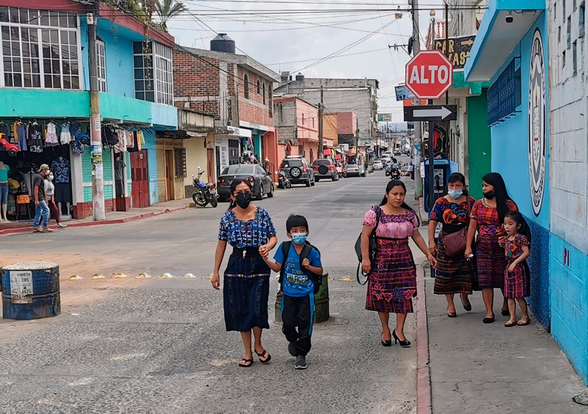
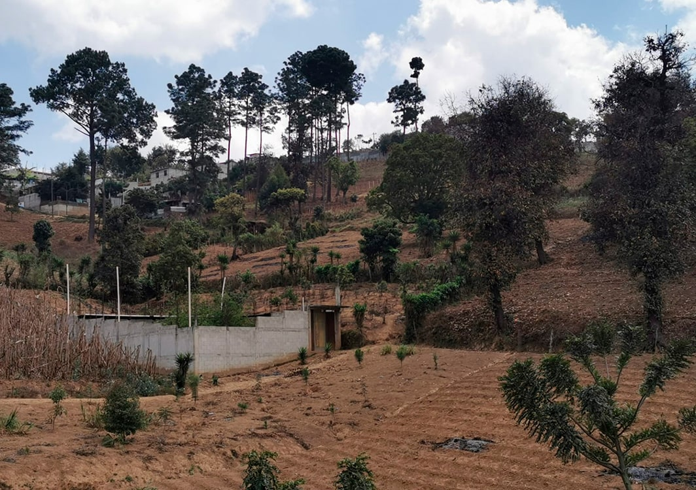
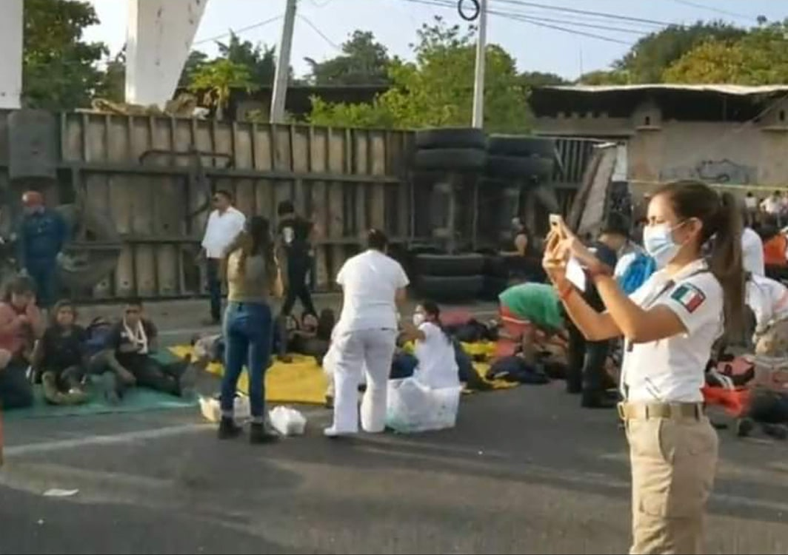
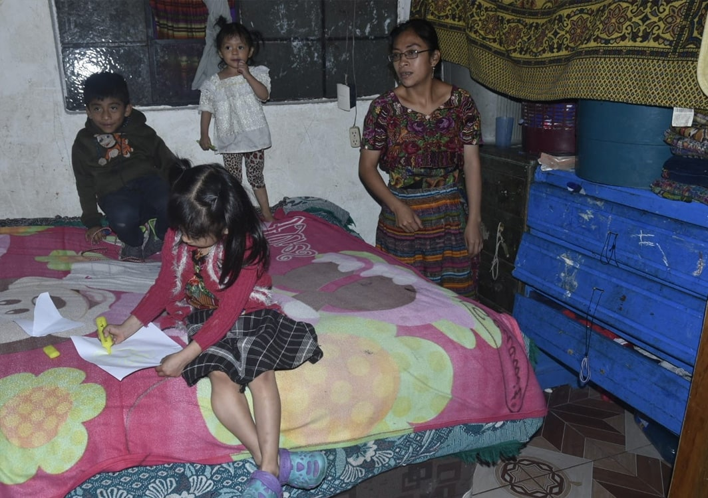
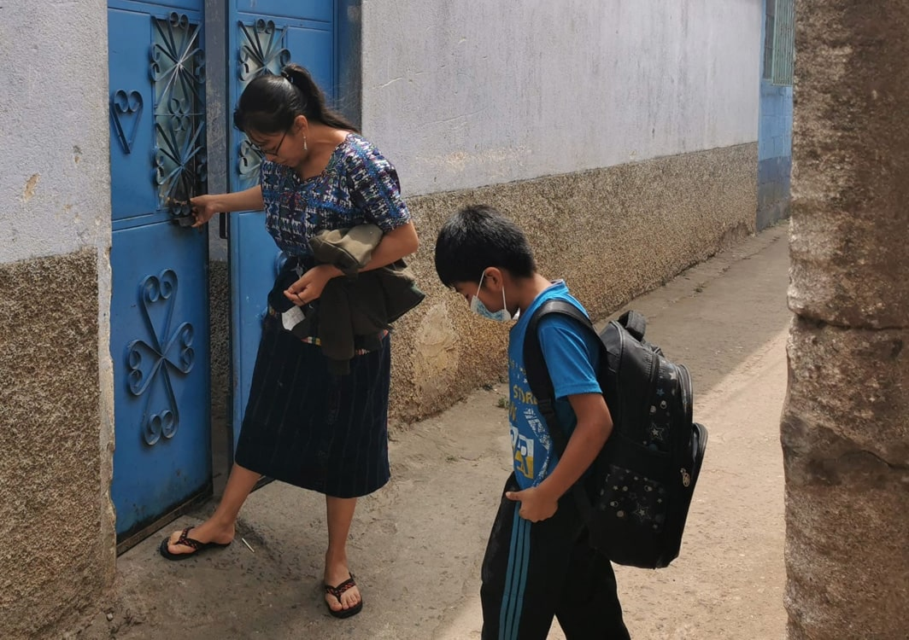

Carlos Enrique Subuyuc Machic, de 8 años, dibujó su escuela ubicada en el Cantón La Cruz, en Chimaltenango, una casa que anhela para tener sus cabras y conejos, así como la tienda que espera ponerle a su mamá Osmery Machic. Foto: Composición realizada por Giovanni Salazar de Agenda Propia.
El sueño de un emigrante sigue vivo en su hijo
CCarlos es integrante del pueblo indígena Kaqchikel, en el departamento de Chimaltenango, Guatemala. Su padre falleció en el intento de llegar a Estados Unidos. Sin embargo, el sueño de prosperidad para esta familia sigue vivo en el niño, quien anhela tener una casa grande, estudiar, abrir un negocio para su mamá y graduarse de maestro de educación física.
Por: Óscar García.En Chimaltenango, departamento situado a 50 kilómetros al occidente de la ciudad de Guatemala, vive Carlos Enrique Subuyuc Machic, quien a sus 8 años sueña con tener algún día, una casa grande, con amplio espacio para sembrar milpa, zanahorias y criar gallinas, sobre todo gallos de pelea, cabras y conejos. Por esa razón, con lápiz y colores en mano, traza su sueño en hojas de papel.
Se escuchan las risas y voces de sus dos hermanas y sus primos, menores que él, quienes también quieren dibujar cuando lo ven. Todos se agrupan alrededor de la mesa, donde su familia, formada por su madre, abuelos, bisabuelos, tíos y primos, se turnan para comer.
Todo el alboroto no es impedimento para que Carlos se concentre en dibujar, mientras que a escasos metros solo lo observa su abuelo, que está recostado en su cama, pues el mismo recinto funciona de comedor y de dormitorio.
Lo primero que dibujó fue una casa que se imagina en un terreno grande, tal como donde anteriormente vivía, pero que su papá, Jaime Enrique Subuyuc, vendió para costear su viaje de migración.
Estos son los dibujos con los que el niño Carlos Enrique representó su vida, familia y sueños.
Con la ilusión de pagar los estudios de sus tres hijos menores de 8 años, recuperar su terreno para construirles una casa formal y garantizarles la alimentación, Jaime partió, con solo una mochila en la espalda, rumbo a Estados Unidos.
La falta de fuentes de trabajo y el bajo salario que recibía como obrero en Chimaltenango fueron las principales razones por las que este padre de familia, de 30 años, decidió iniciar esa travesía.
El niño vive en la colonia Chojopin, Chimaltenango, situada a 50 kilómetros de la capital de Guatemala en la región del Occidente. Foto: Óscar García.
El martes 7 de diciembre del 2021, a eso de las 4 de la madrugada, Jaime salió de su humilde vivienda, en la colonia Chojopin, para dirigirse a esperar un autobús hacia la frontera con México y reunirse con un coyote, como se denomina en Guatemala al traficante de personas.
Carlos nunca supo las preocupaciones que motivaban a su papá para emigrar y mucho menos el riesgo que le esperaba en su camino.
Jaime solamente le dijo a su hijo que se iba a trabajar por muchos días, muy lejos, pero que iba a volver y a construir una buena casa para que él y sus hermanas pudieran seguir estudiando.
“Iba muy ilusionado”
“Mi esposo hacía cualquier trabajo para ganar su jornada del día, sobre todo labores de albañilería, pero a veces no había nada y eso le preocupaba. Por eso dispuso irse a Estados Unidos, porque, además de Carlitos, quería que las otras dos niñas fueran a la escuela. Mi esposo, como pasa con muchos migrantes que se van a Estados Unidos, emprendió su viaje con muchos sueños”
comentó Osmery Machic.
El obrero formó parte de la migración de guatemaltecos hacia Estados Unidos, en 2021, en medio de la pandemia de Covid-19. Ese año, más de 57 mil de ellos fueron retornados desde México y Estados Unidos, según datos del Instituto Guatemalteco de Migración.
La migración de guatemaltecos hacia EE.UU. continúa, así como las deportaciones al país. Foto: Instituto Guatemalteco de Migración.
Un informe presentado por la Agencia para el Desarrollo Internacional de Estados Unidos, el Fondo de Población de Naciones Unidas y la Organización Internacional de Migraciones, el 17 de agosto de 2021, indicó que 83% de la población guatemalteca que emigra está formada por personas entre 15 y 39 años, principalmente hombres jóvenes.
Otros datos del estudio destacan que la mayor parte (56.4%) de la población que integra los hogares receptores de remesas y con familiares en el exterior corresponde a la población maya.
Asimismo, agrega que los departamentos con mayor tasa de migración en el país son Huehuetenango, Quiché, Sololá, San Marcos, Guatemala, Baja Verapaz y Chimaltenango, de donde partió Jaime y donde vive Carlos.
“En mi corazón los llevo”
“Me cuidas a los nenes. Yo me voy para un futuro mejor, oyeron. Allí se cuidan. Solo dile a Carlitos, a la Abi y a la Dulce que los amo. Los quiero y en mi corazón los llevo. En donde quiera que yo esté, ellos estarán conmigo, diles, por favor”.
Ese es uno de los últimos videos que Jaime grabó en su teléfono mientras iba caminando hacia el punto donde debía abordar el autobús. De inmediato lo envió a una hermana para que lo reenviara a Osmery, y a sus tres niños.
Carlos conserva el video y lo reproduce cuando quiere escuchar la voz de su papá. (Ver video)
video
Despedida de Jaime antes de partir a EE.UU. Cortesía Osmery Machic.
Ese mismo martes Jaime llegó a la frontera de Guatemala con México, por el lado de la aldea La Mesilla, departamento La Democracia, Huehuetenango, a casi 300 kilómetros desde la capital guatemalteca, al occidente de la república.
No es el único migrante guatemalteco que puso en juego su patrimonio: la mayoría de quienes deciden emigrar se ven obligados a recurrir a la venta de su casa o terreno, o a pedir hipotecas o préstamos bancarios para recaudar entre Q37 mil (U$5 mil) hasta Q80 mil (U$10 mil) que cobran los traficantes, según testimonios de viajeros.

En la población de Chimaltenango sobresalen habitantes de la etnia Kaqchikel. Foto: Óscar García.
Chimaltenango es uno de los 22 departamentos de Guatemala. El idioma maya predominante es el Kaqchikel.
Según el Instituto Nacional de Estadística (INE), en 2015 tenía una población de 685 mil 513 habitantes, de los cuales el 50 % habitaba el área urbana y 49.2% el área rural.
El 78% de la población pertenece al pueblo Maya y 21,6% se identifica como no indígena. Carlos y su familia hacen parte del pueblo Kaqchikel.
Según el informe Modelo de Identificación del Riesgo de Trabajo Infantil en Chimaltenango, del Ministerio de Trabajo y Previsión Social, 66% de los habitantes del departamento están en condiciones de pobreza, y 23,4% en pobreza extrema.
Silvia Chuy, miembro de la autoridad indígena de Comalapa, municipio de Chimaltenango, explica que faltan políticas públicas para atender las carencias sociales.
“La situación de pobreza en nuestro departamento es por falta de proyectos de los gobiernos para crear fuentes de empleos y desarrollo para las comunidades. También por el alto índice de corrupción en los funcionarios públicos”, dice.
“Por esa razón está aumentando la migración de padres de familia y jóvenes hacia Estados Unidos”, agrega Silvia.
Esa fue la causa que empujó a Jaime a buscar una oportunidad en Estados Unidos: los Q60 (U$6) que ganaba al día, trabajando como albañil en su localidad, no alcanzaban para mantener a su familia.
Envía señales
Con el sueño de prosperar, el mismo día de su partida llegó a la frontera con México y envió un mensaje a su familia: “Ya pasé la primera fase”. Carlos al enterarse, seguía interpretando que su papá se dirigía a su trabajo, como lo había dicho.
El miércoles 8, el padre cruzó a territorio mexicano y por la noche su mensaje fue: “Ya descansando porque mañana hay que retomar el camino”.
Ese día, Jaime se encontró con un grupo de más de 200 migrantes, la mayoría guatemaltecos, que esperaban indicaciones de los coyotes para continuar el viaje.
Piden permiso para abandonar su tierra

Varios migrantes de Chimaltenango, antes de partir, le piden permiso y protección a su territorio, cuentan familiares. Foto: Óscar García.
Rosenda -quien prefiere identificarse sólo con ese nombre- sanadora del alma, (consejera), cuenta que muchos pobladores de Chimaltenango que van a Estados Unidos suelen pedir protección antes de partir.
“Saben que el viaje no es fácil y se preparan espiritualmente. Piden permiso para abandonar la Madre Tierra que los vio nacer, al corazón del universo, a los cerros y montañas, pues ellos a la vez, se convierten en sus protectores durante el viaje”, explica.
La familia de Jaime ignora si él pidió ese permiso, pero sí recuerda que el optimismo por alcanzar su destino se refleja en los mensajes de texto y de voz que envió.
Último mensaje a su hijo
El último mensaje que Jaime escribe y graba para su hijo Carlos, a las 6 de la mañana del jueves 9 de diciembre, dice: “Mijo, si ya no te puedo escribir o hablar es porque ya voy en camino, para ir a trabajar bien lejos. Pero el viernes te escribo”.
Ese día el grupo inició la travesía por México, en dirección a la frontera con Estados Unidos, según los testimonios que ofrecieron a medios de comunicación y autoridades otros migrantes que viajaban con Jaime y sobrevivieron a la tragedia.
Es así como un furgón a bordo del cual va Jaime sale desde un punto próximo a San Cristóbal de las Casas, al sur de México. Su destino era Puebla, según aseguró el jefe de la Guardia Nacional de ese país, Luis Rodríguez Bucio.
Cuando pasan las 3 de la tarde, hora de México, es decir 90 minutos después de iniciar el viaje, el cabezal que jala dos remolques en el que van amontonados más de 160 migrantes, la mayoría guatemaltecos, entre ellos Jaime, se estrella contra un puente peatonal, en Tuxtla Gutiérrez, Chiapas.

Jaime Subuyuc pereció en la tragedia en Tuxtla Gutiérrez, México, el 9 de diciembre de 2021. Foto: Cruz Roja de México.
Fallecieron 56 personas, entre ellas 46 guatemaltecos, y más de 100 resultaron heridas. Otros sobrevivientes, que salieron ilesos o con pequeños traumatismos, escaparon del lugar, según testigos.
Para las autoridades mexicanas, este es el balance más letal que se recuerde en accidentes registrados hasta esa fecha en el Puente de la Muerte, como bautizaron los vecinos al sitio debido a los constantes percances que ocurren en ese lugar, situado cerca de la capital del estado de Chiapas.
Media hora después del accidente, Osmery recibió en su celular una llamada.
“¿Qué es usted de Jaime Enrique Subuyuc?”, le preguntó una voz. En el sitio del accidente habían encontrado el celular de él y tuvieron acceso a los audios y textos que envió, sobre todo al último, que dirigió a su hijo, Carlos.
La esperanza se esfuma
Aquel sueño de disfrutar una mejor situación, con un esposo trabajando en Estados Unidos, se derrumbó ese día para Osmery, su niño Carlos y sus hijas Abigail, de 4 años, y Dulce, de 2.
Esta tragedia también dejó huérfanos a otros 53 niños, niñas y adolescentes que viven en varios departamentos de Guatemala, pues la mayoría de migrantes fallecidos eran padres de familia, según el recuento de la organización no gubernamental Plan Internacional.
Carlos cursa segundo año de primaria en la Escuela de Primaria, situada en el Cantón La Cruz. Foto: Óscar García.
Al 7 de abril de este año Plan Internacional ha brindado dos ayudas económicas a algunos de los hijos e hijas de los fallecidos en el accidente. “19 de ellos reciben una beca educativa”, asegura Sucely Donis, especialista en Migración de la ONG.
Las víctimas eran originarias de los departamentos de Quiché, San Marcos, Chimaltenango, Petén, Izabal y Alta Verapaz, reporta el Instituto Guatemalteco de Migración.
Jaime, el papá que soñaba un futuro mejor para su familia, ahora descansa en el cementerio de su tierra natal, Chimaltenango, mientras Carlos, sus hermanas y su mamá viven en un cuarto que les cedieron unos familiares, pues se quedaron sin un lugar propio para vivir.

Osmery muestra la habitación donde vive junto a Carlos, Abigail y Dulce, la más pequeña. Foto: Oscar García.
Hasta el 28 de mayo del 2022 el gobierno de Guatemala no había concretado ninguna ayuda para las familias de los migrantes fallecidos en el accidente del 9 de diciembre del 2021. El futuro de los 56 niños, niñas y adolescentes que perdieron a papá o a mamá en este viaje de la muerte sigue siendo incierto.
Para Carlos, su papá ahora está en el cielo. Aún espera recibir lo que él quería darles.
Sueña con una casa grande, graduarse de maestro de educación física y abrir una tienda para que su mamá deje de salir a trabajar, como lo hace ahora.
Ella vende tortillas para ganarse diariamente un promedio de Q25, equivalente a un promedio de U$3.
Relato de Carlos sobre sus sueños de un mejor futuro para él y su familia.
El niño cursa segundo grado de primaria en la Escuela Cantón La Cruz, en Chimaltenango. A veces tiene dificultades con el acceso a internet para recibir sus clases virtuales, que son dos veces a la semana, porque lunes, miércoles y viernes tiene clase presencial en el plantel educativo.
El 13 de enero de 2022, Carlos junto a su familia se trasladaron a Ciudad de Guatemala a recoger el cadáver de Jaime que fue repatriado junto al de otros migrantes víctimas del accidente. Ese día, en la Fuerza Aérea Guatemalteca, aeropuerto la Aurora, Carlos vio muchas aeronaves.
Desde entonces viajar en avión se convirtió también en uno de sus sueños.
“Nos hemos quedado solitos. Tengo que ver cómo logro ese futuro que mi difunto esposo pensaba para nuestros hijos”, comenta Osmery.
Al oír a su mamá, Carlos la abraza y le dice: “Espero que me ayuden para seguir estudiando y cuando yo trabaje te voy a ayudar”.

Osmery ahora vive en casa de sus papás, porque Jaime vendió la propiedad que tenían para costear su viaje a EE.UU. Foto: Óscar García.
Nota. Esta historia hace parte de la serie periodística Dibujando mi realidad, #NiñezIndígena en América Latina, cocreada con niños, niñas, periodistas y comunicadores indígenas y no indígenas de la Red Tejiendo Historias (Rede Tecendo Histórias), bajo la coordinación editorial del medio independiente Agenda Propia.

{kind=link}
{kind=link}
{kind=link}
{kind=link}